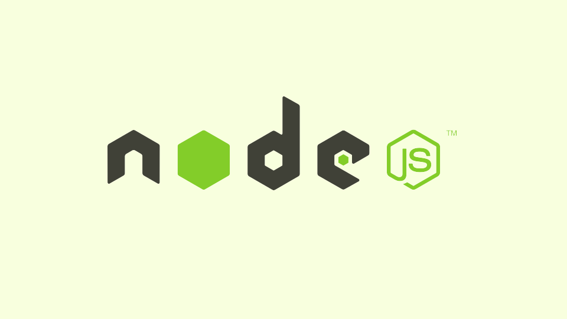
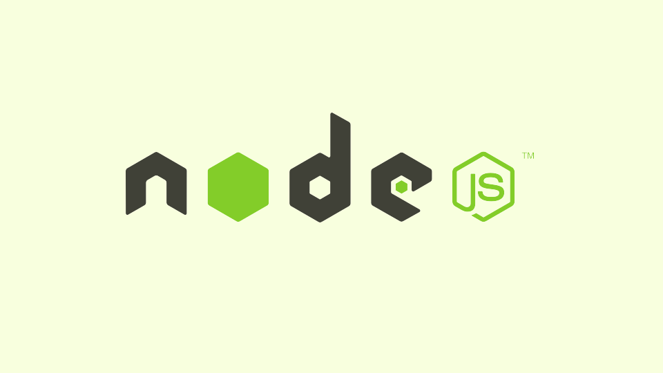

Experience
My first website , an initiative I took in support of a christian campus ministry at University of Ghana, was created using only HTML on Blogger in 2010.
Over the years, I have had the opportunity to hone my skills through practice in part-time capacities as a graphic designer, a front-end developer, a design program coordinator, a marketing manager and currently, as a web development instructor.
Freelance practice
I cannot however deny that I have gained an incredible wealth of
knowledge through my freelance practice as a web developer. Each
work has presented learning opportunities to acquire new skills and
tools, required by the task.
Stack
Currently, I have some exposure to following development libraries/frameworks:
Front-end
Bootstrap, TailwindCSS, JQuery, React and D3.
In addition, I am familiar with prototyping tools including Figma and InVision.


In front-end development roles, I am open to work that will hone my skills in:
Back-end:
Django, Flask, MongoDB and Node.js
 

Education
While my bachelors introduced me to core principles of programming using C and C++, I also had the privilege of leveraging Harvard University's OpenCourseWare, which introduced web technologies including HTML, CSS, JavaScript, PHP, MySQL and Python.
2022 - 2024: Executive MBA, Quantic School of Business and
Technology
Relevant Coursework: Managing Software Applications
(Cloud Foundations, Application Development Management & Web
Application Foundations) and Decentralized Applications.
2012 - 2014: Online Courses, Harvard University
Relevant Coursework: CS50 Introduction to
Computer Science, CS50W Web Programming with Python and
JavaScript & CS50P Introduction to Programming with
Python.
2009 - 2013: BSc Engineering, University of Ghana
Relevant Coursework: Programming (C and C++), Engineering
Mathematics, Basic Electronics and Digital Circuits.
Language Skills
I have proficient knowledge in English (completed my bachelors and masters in English) and have basic knowledge in German (completed A1 level at Göethe Institute).